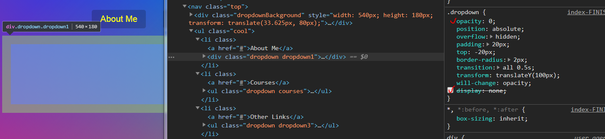
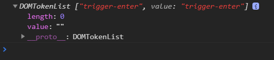
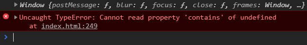

這次的範例有一小部份效果看似跟Day22的範例一樣
但其中藏了滿多值得留意的重點和技巧！
看似無聊但很多重點的單元！
觀察 HTML 和 CSS 結構

在範例中，每個 li 裡所包含的資料都已經存在
而資料要包在 li 裡也關係到了我們觸發事件使用的mouseenter和mouseleave
在 css 部分，我們要先隱藏原本的內容，除了透明外，display:none 是必須的
不然我們滑鼠一碰到這些隱藏內容，就會觸發事件
（因為內容包在 li 內，碰到內容即碰到 li，這不是我們要的效果)。
css 部屬
1 | .dropdown { |
說明：原始元素只有套用
.dropdown這個 class，而下方兩個樣式是在必須有父層樣式(.trigger-enter,.trigger-enter-active)的條件下，才會有效果的 class，因此這邊我們是去控制父層的 class 來改變.dropdown的屬性。
再透過事件觸發去加上或刪除指定的 class
(分開寫純粹是效果需求)
對象和觸發條件
一樣先把觸發對象和條件先建構出來1
2
3
4
5
6
7
8
9
10
11
12
13const triggers = document.querySelectorAll(".cool > li");
const background = document.querySelector(".dropdownBackground");
const nav = document.querySelector(".top");
function handleEnter() {
//..
}
function handleLeave() {
//..
}
triggers.forEach(trigger =>trigger.addEventListener("mouseenter", handleEnter));
triggers.forEach(trigger =>trigger.addEventListener("mouseleave", handleLeave));
滑鼠移入後
滑鼠移入後，按照效果需求先後加上class1
2
3
4
5
6
7
8
9
10
11
12
13
14function handleEnter() {
this.classList.add('trigger-enter');
//關鍵:判斷有沒有class的方法
setTimeout(() => {
//此時的this已變成window,所以用ES6立即函示
//console.log(this)
if (this.classList.contains('trigger-enter')) {
this.classList.add('trigger-enter-active')
}
//小技巧:
//this.classList.contains('trigger-enter') && t his.classList.add('trigger-enter-active')
}, 150)
background.classList.add('open');
}
當然在這邊也可以不用特別去判斷是否有trigger-enter效果一樣存在，但因為有了這個判斷
我們可以認識DOMTokenList.contains！
關鍵：DOMTokenList.contains()
為什麼不是includes?
includes() 方法會判斷陣列是否包含特定的元素，並以此來回傳 true 或 false。
因為我們的this.classList不是陣列

我們透過contains：
DOMTokenList.contains()
The contains() method of the DOMTokenList interface returns a Boolean — true if the underlying list contains the given token, otherwise false.
還有很多方法可以判斷:
如何用JavaScript判断dom是否有class的值？
當然在這邊也可以不做setTimeout延遲效果，但因為有了setTimeout
我們注意到了this發生了變化！
關鍵：this
錯誤寫法:1
2
3
4
5
6setTimeout(function(){
console.log(this)
if (this.classList.contains('trigger-enter')) {
this.classList.add('trigger-enter-active')
}
}, 150)

在setTimeout裡面我們的this變成了window
ES5中的this指向的事觸發該涵式的對象
setTimeout是由windows觸發的。
所以這時候他不知道window.contains是什麼，因此出現錯誤。
解決方法可以簡單透過變數在setTimeout之前定義對象，不要用this即可const showItem = event.target;
this看的是究竟是誰調用該函式 #Javascript：this用法整理
我們透過es6箭頭涵式中this的特性來解決
ES6中箭頭函數它没有自己的this值，它繼承外圍作用域的this
1 | setTimeout(() => { |
所以這時的this指的就是我們的li了
條件式縮寫
在原始範例中出現一個少見的條件式簡寫
原本:1
2
3if (this.classList.contains('trigger-enter')) {
this.classList.add('trigger-enter-active')
}
可以縮寫成:1
this.classList.contains('trigger-enter') && this.classList.add('trigger-enter-active')
一個不起眼範例藏了滿多細節的！
不負責任聲明ಥ◡ಥ：
純屬個人筆記，每個範例都有不同的寫法，還有很多細節可以加入，甚至可能有看不到的bug，有任何問題都歡迎提出一起研究哦，我會很感謝您的！沒有好不好，只有適不適合 - 2018.09.01